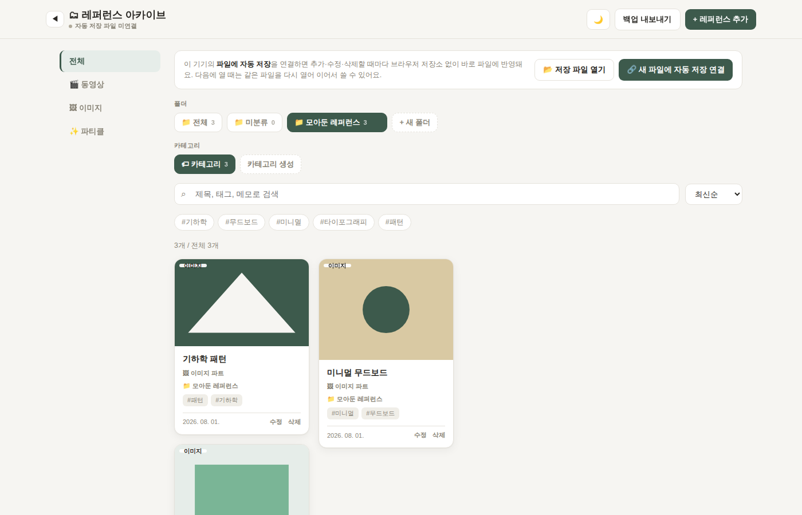

앱처럼 설치하기. "웹에서 바로 실행"을 크롬이나 엣지로 열면 주소창 오른쪽에 설치 아이콘(⊕)이 떠요. 눌러서 설치하면 바탕화면/시작 메뉴에 아이콘이 생기고, 이후엔 독립된 앱 창으로 열려요. 별도 설치 프로그램 없이 브라우저만 있으면 돼요.
🖼️
이미지 · 유튜브 모으기
이미지 URL/업로드와 유튜브 링크를 저장하면 자동으로 미리보기가 생성돼요.
📁
폴더 · 카테고리 분류
폴더와 카테고리로 원하는 기준에 맞춰 레퍼런스를 정리할 수 있어요.
💾
내 컴퓨터에 자동 저장
서버 없이 내 기기의 파일에 직접 저장돼요. 데이터는 항상 내 손 안에 있어요.